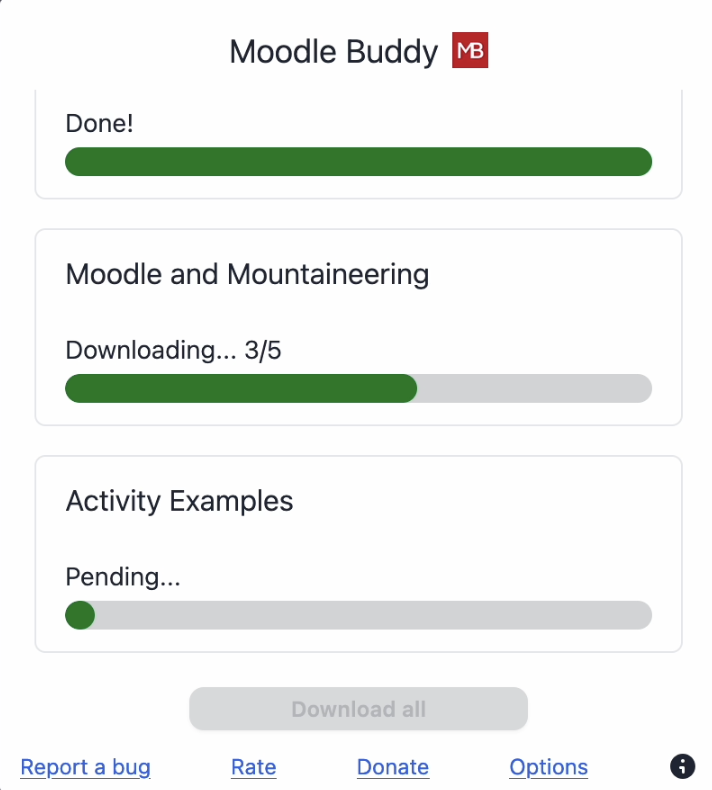
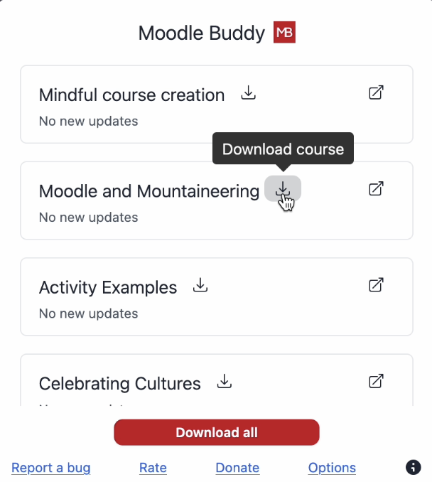

-
New Feature: Download all courses from the dashboard page
This has been a much requested feature and it's finally here. Now you are able to download all the courses that are displayed in the overview page all at once. They will be downloaded one after the other.

Additionally, there is also new button to download each course individually.  -
Improvement of UI
I have generally tried to improve the user experience by changing some buttons, adding tooltips and more.
Moodle Buddy

Moodle Buddy has been updated to version
🎉 🎉
Changelog
As always I would be very happy to receive feedback!
Just submit this contact form. Thank you very much!
Just submit this contact form. Thank you very much!